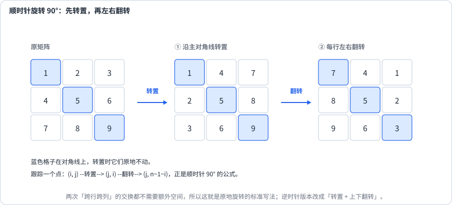
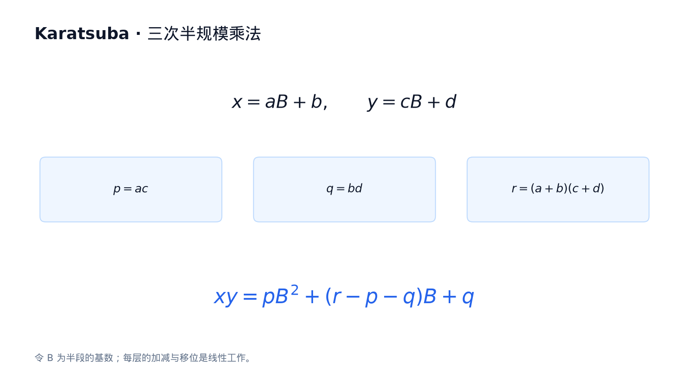
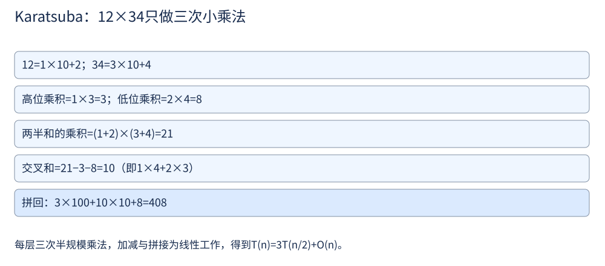

第 26 讲 · 数学与几何¶
阅读起点：第 2 讲：下标；第 3 讲：字典与哈希；第 4 讲：判环；第 7 讲：分治。位操作可对照第 27 讲。
首读范围：先做加一、字符串相乘和矩阵操作；快乐数结合第 4 讲判环；Karatsuba、共线与位成本选读。
先从两个能手写的小任务开始：把十进制数加一，把方阵顺时针旋转 90°。它们都要求先说清“每一位或每个格子最后去哪”，再安排读写顺序。加一的输入是从高到低的数位列表，例如 [1,2,9] 表示 129；旋转的输入则是 \(n\timesn\) 方阵。
这一讲要处理的，就是这类"看起来很朴素、其实很有讲究"的问题：
| 类型 | 要练的能力 |
|---|---|
| 数位操作 | 把十进制位写成循环（取模 + 整除） |
| 快速幂 / 分治乘法 | 每次把规模减半 |
| 矩阵的原地变换 | 用下标公式代替额外空间 |
| 几何与坐标 | 用哈希把"点"和"方向"变成 key |
用数组和字符串表示十进制数¶
平时写 129+1，语言会替我们处理进位。如果数字非常长，或题目要求自己实现数位运算，就要把每一位分别保存，再模拟同样的规则。下面的数组、字符串都按高位在前、个位在后存储。
加一：什么时候需要继续向左处理¶
输入非空数位数组 digits，每个元素是 0..9 的整数，按从高位到低位表示一个非负整数；除了 [0]，没有前导零。要求返回这个数加 1 后的数位数组。例如 [1,2,9] 表示 129，应返回 [1,3,0]；[9,9] 表示 99，应返回 [1,0,0]。这里要练习逐位进位，不把整个数组先转换成一个整数。
加 1 从个位开始。若当前位小于 9，把它加 1 就结束，更高位无需改变；若当前位为 9，它加 1 后变成 0，并向左继续进 1。对 [1,2,9]，先把末尾 9 变 0，再把十位 2 变 3，随后停止。只有所有位都是 9 时，进位才会越过最左端，此时要在前面补一个 1。
下面的函数会修改传入列表中的数位，返回最终结果；全 9 时会新建一个多一位的列表，因此调用时应接住返回值，例如 answer=plus_one([9,9])。
def plus_one(digits):
for i in range(len(digits) - 1, -1, -1):
if digits[i] < 9:
digits[i] += 1
return digits
digits[i] = 0
return [1] + digits # 全是 9 的情况
字符串相乘：先确定每个部分积属于哪一位¶
输入 num1、num2 是表示非负整数的非空字符串，只含数字字符，除了 "0" 没有前导零。返回乘积的十进制字符串，同样不带多余前导零。例如输入 "12"、"34"，输出 "408"。不能把整个字符串转成整数后直接相乘；可以把单个字符转成 0..9，以实现竖式乘法。
先按位值展开一个熟悉的例子：
因此，每个数位都要与另一个数的每个数位相乘，再把结果加到对应位上。长度分别为 m、n 的两数都小于 10 的相应次幂，乘积小于 \(10^{m+n}\)，所以预留 m+n 个数位槽就足够。
为什么是 \(i+j+1\)？ num1[i] 的位值为 \(10^{m-1-i}\)，num2[j] 的位值为 \(10^{n-1-j}\)，相乘后位值是 \(10^{m+n-2-i-j}\)。在长 m+n 的结果数组里，下标 k 的位值是 \(10^{m+n-1-k}\)；令两者相等，就得到 k=i+j+1。这个位置放本位数字，十进制进位放在左边的 k-1=i+j。
例如 \(12\times34\) 预留四格 [千位,百位,十位,个位]。按代码从右到左处理：
| 当前两位 | 写入与进位 | res |
|---|---|---|
| \(2\times4\) | 个位累加 8 | [0,0,0,8] |
| \(2\times3\) | 十位累加 6 | [0,0,6,8] |
| \(1\times4\) | 十位变 10，留下 0，向百位进 1 | [0,1,0,8] |
| \(1\times3\) | 百位在原有进位上再加 3 | [0,4,0,8] |
代码每次都先累加，再用 //10 取进位、%10 留本位。因此多个部分积可以汇到同一格，不能直接用新乘积覆盖旧值。最后把数位数组变成字符串：map(str,res) 逐个把数字变成字符，''.join(...) 用空分隔符将它们接成一串，例如 [0,4,0,8] 变成 "0408"；lstrip('0') 只删掉开头连续的 0，得到 "408"，不会删除中间的 0。乘数为零的情况在函数开头单独返回 "0"。
def multiply(num1, num2):
if num1 == "0" or num2 == "0":
return "0"
res = [0] * (len(num1) + len(num2))
for i in range(len(num1) - 1, -1, -1):
for j in range(len(num2) - 1, -1, -1):
res[i + j + 1] += int(num1[i]) * int(num2[j])
res[i + j] += res[i + j + 1] // 10 # 进位
res[i + j + 1] %= 10
return ''.join(map(str, res)).lstrip('0')
快乐数：反复计算会停在 1，还是陷入循环¶
输入正整数 n，每次把它替换为各个十进制数位的平方和。如果反复操作最终到达 1，返回 True；如果一直到不了 1，返回 False。例如 19 的变化为：
但 2 会走进循环：2→4→16→37→58→89→145→42→20→4→…。一旦数字重复，后续变化也会重复，因为同一个数总有同一个下一结果。
先考虑用集合：每次变换前检查当前数是否出现过；到 1 则成功，重复且不是 1 则失败。这需要保存见过的数。若想省去集合，可以把“一个数字”看作节点，把“计算下一次平方和”看作 next 连接，沿用第 4 讲的快慢指针判环。
还需确认它不会永远产生不同的大数。一个 d 位正数的平方和至多 81d；当 d不小于4 时，\(81d<10^{d-1}\)，下一数比原数更小。降到三位以内后，下一数最多 243，以后始终留在有限范围内。所以一定会出现重复状态；1 的下一状态仍是 1，也可看成一个只有自身的环。快慢指针相遇后，只需检查相遇的数是否为 1。
next_num 用 divmod(x,10) 同时得到去掉个位后的整数和个位数字，例如 divmod(19,10) 返回 (1,9)；逐位平方累加即可。
def is_happy(n):
if n <= 0:
return False
def next_num(x):
s = 0
while x:
x, d = divmod(x, 10)
s += d * d
return s
slow = fast = n
while True:
slow = next_num(slow)
fast = next_num(next_num(fast))
if slow == fast:
return slow == 1
矩阵题：先确定格子的去向，再安排修改顺序¶
矩阵在代码中用二维列表保存，matrix[i][j] 表示第 i 行、第 j 列；行从上向下编号，列从左向右编号，均从 0 开始。下面三个任务分别是旋转位置、按指定路线读取、按零元素清空行列，操作要求不同。
旋转图像：原地顺时针转 90°¶
输入 \(n\timesn\) 方阵，把所有格子顺时针旋转 90°，要求直接修改 matrix，不另建 \(n\timesn\) 的结果。比如 [[1,2],[3,4]] 要变为 [[3,1],[4,2]]；函数无需返回新矩阵。
观察原来最上面的一行：旋转后成了最右边的一列。一般地，原格 (i,j) 会到 (j,n-1-i)：原列 j 变成新行，原行 i 距离上边的位置变成距离右边的位置。直接逐格写目标位置会覆盖尚未搬走的值，因此把变换拆成两个只需要交换的步骤。

图用 \(3\times3\) 矩阵展示这两个步骤；先用下面的 \(2\times2\) 例子核对每次交换，再按图追踪更多格子。
先转置，再左右翻转。 转置是交换 (i,j) 与 (j,i)，相当于沿主对角线翻折；左右翻转则交换每一行中对称的两格。对 \(2\times2\) 例子，转置得到 [[1,3],[2,4]]，再把每行倒过来，就得到 [[3,1],[4,2]]。
def rotate(matrix):
n = len(matrix)
for i in range(n): # 第一步：沿主对角线转置
for j in range(i + 1, n): # 只遍历上三角，否则每个元素会被换两次
matrix[i][j], matrix[j][i] = matrix[j][i], matrix[i][j]
for i in range(n): # 第二步：每一行左右翻转
for j in range(n // 2):
matrix[i][j], matrix[i][n - 1 - j] = matrix[i][n - 1 - j], matrix[i][j]
怎么确认这个组合是对的？ 跟踪一个点：(i, j) 转置后到 (j, i)，再左右翻转后到 \((j,n-1-i)\)——这正是顺时针 90° 的映射公式。逆时针 90° 则是"转置 + 上下翻转"。
螺旋遍历：沿外圈读取，再转入内圈¶
输入 \(m\timesn\) 矩形矩阵，返回按顺时针螺旋顺序读出的所有元素，不修改原矩阵。起点是左上角，先向右，再向下、向左、向上，一圈后进入内圈。例如 [[1,2,3],[4,5,6]] 返回 [1,2,3,6,5,4]；空矩阵返回 []。
用 top、bottom 表示尚未输出区域的最上、最下行，left、right 表示最左、最右列。先读 top 行后让 top 加 1，再读 right 列后让 right 减 1，依次处理剩下的下边和左边。每读完一条边就把边界收进去，避免再次读到这一条：
def spiral_order(matrix):
if not matrix or not matrix[0]:
return []
top, bottom = 0, len(matrix) - 1
left, right = 0, len(matrix[0]) - 1
res = []
while top <= bottom and left <= right:
for j in range(left, right + 1): # 左 → 右
res.append(matrix[top][j])
top += 1
for i in range(top, bottom + 1): # 上 → 下
res.append(matrix[i][right])
right -= 1
if top <= bottom: # 收缩之后可能已经没行了
for j in range(right, left - 1, -1): # 右 → 左
res.append(matrix[bottom][j])
bottom -= 1
if left <= right: # 也可能已经没列了
for i in range(bottom, top - 1, -1): # 下 → 上
res.append(matrix[i][left])
left += 1
return res
那两个 if 一个都不能省：前面的收缩可能已经让区间变空（只剩一行或只剩一列），不判断就会重复输出。
矩阵置零：只按原来存在的 0 决定清空范围¶
输入 \(m\timesn\) 整数矩阵，只要原矩阵中 matrix[i][j]=0，就要把第 i 行、第 j 列全部改成 0，要求原地修改。例如 [[1,2,3],[4,0,6],[7,8,9]] 应变成 [[1,0,3],[0,0,0],[7,0,9]]。后来为了清空而写入的 0 不能再引发新的清空，否则可能错误地把整张表都清零。
最容易理解的做法是分两遍：第一遍只记录哪些行、列原本有 0，第二遍按这些标记修改矩阵。独立的行、列标记分别占 \(\mathcal{O}(m)\)、\(\mathcal{O}(n)\) 空间。要进一步做到 \(\mathcal{O}(1)\) 额外空间，可以让矩阵自己的首列保存行标记、首行保存列标记：内部发现零元素 (i,j)，就写 matrix[i][0]=0、matrix[0][j]=0。
但首行、首列原本是否含 0，之后会被这些标记混淆，所以先用两个布尔变量单独记住。随后只扫描内部格子设置标记，再据标记清空内部，最后按两个布尔变量处理首行和首列。any(条件 for j in range(n)) 按第 3 讲的生成器写法，逐个计算每个 j 的条件，至少一个为真就返回 True。例如首行的检查就是问“首行有没有某一格等于 0”。
def set_zeroes(matrix):
if not matrix or not matrix[0]:
return
ROWS, COLS = len(matrix), len(matrix[0])
row0_zero = any(matrix[0][j] == 0 for j in range(COLS))
col0_zero = any(matrix[i][0] == 0 for i in range(ROWS))
for i in range(1, ROWS): # 用首行首列记录"这一行/列要不要清零"
for j in range(1, COLS):
if matrix[i][j] == 0:
matrix[i][0] = 0
matrix[0][j] = 0
for i in range(1, ROWS): # 按标记清零
for j in range(1, COLS):
if matrix[i][0] == 0 or matrix[0][j] == 0:
matrix[i][j] = 0
if row0_zero: # 首行首列留到最后处理
for j in range(COLS):
matrix[0][j] = 0
if col0_zero:
for i in range(ROWS):
matrix[i][0] = 0
三个阶段的顺序不能乱：先记下首行首列原本有没有 0，再用它们当标记，最后才真正清空首行首列。提前处理会被自己的标记冲掉。
几何题：用坐标表示点，用整数对表示方向¶
检测正方形：给定一个角，数出另外三个角的选法¶
设计一个数据结构，支持 add([x,y]) 保存一个平面整数点，以及 count([x,y]) 查询：把查询点作为一个角，从已保存的点中选三个，能组成多少个边平行于坐标轴、边长大于 0 的正方形？查询点本身不需要预先保存。同一坐标可多次加入，每份记录都可独立参与选择。
例如依次加入 [1,0]、[0,1]、[1,1]，查询 [0,0] 返回 1。若再加入一份 [1,1]，查询结果变成 2，因为对角顶点有两份可选记录。
固定查询角 (x,y)，枚举一个已保存的对角顶点 (px,py)。水平距离与竖直距离相同且非零时，才可能形成轴对齐正方形；另外两角的位置随即确定为 (px,y)、(x,py)。查出这三个坐标各自出现次数后相乘，累加所有可能的对角顶点即可。每个正方形相对查询角只有一个对角顶点，不会因这次枚举重复计数。
defaultdict(int) 在首次读一个缺失键时从 0 开始，便于计数；坐标列表不能直接作字典键，所以 add 用 tuple(point) 转成 (x,y)。查询另两角用 get(key,0)，缺失表示 0 份且不会在遍历时插入新键。self.cnt.items() 每轮给出 (键,值)，这里键又是坐标对，所以 for (px,py),c in ... 依次解出横坐标、纵坐标与记录数；例如键值对 ((1,1),2) 对应 px=1、py=1、c=2。
from collections import defaultdict
class DetectSquares:
def __init__(self):
self.cnt = defaultdict(int)
def add(self, point):
self.cnt[tuple(point)] += 1 # 同一个点可能被多次加入，要计数
def count(self, point):
x, y = point
total = 0
for (px, py), c in self.cnt.items():
# 把 (px, py) 当作对角顶点，看它和给定点能否构成正方形
if abs(px - x) == abs(py - y) and px != x and py != y:
total += c * self.cnt.get((px, y), 0) * self.cnt.get((x, py), 0)
return total
若三处坐标的记录数分别为 2、3、4，那么从它们各选一份有 \(2\times 3\times 4=24\) 种方式；查询点只提供固定的第四个角，不再乘它的保存次数。每次 add 期望 \(\mathcal{O}(1)\)，count 则扫描已经保存的不同坐标。
直线上最多的点：固定一个点，再按方向分组¶
输入两两不同的平面整数点 points，返回一条直线上最多能包含多少个输入点。例如 [[0,0],[1,1],[2,2],[0,1]] 的答案是 3，因为前三点在同一直线上。这里不只判断某三个点，还要在全部候选直线中找最大数量。
先固定基准点 (x1,y1)。其他点与它的差 \((dx,dy)=(x-x1,y-y1)\) 描述方向；同一直线上的点有相同或相反的方向。例如 (1,2)、(2,4)、(-1,-2) 应归为同一组。把两坐标除以最大公约数 gcd，就能把 (2,4) 化为 (1,2)；再统一正负号，让 (-1,-2) 也化为 (1,2)。竖直方向化为 (0,1)，水平方向化为 (1,0)，避免了斜率除以 0 和浮点误差。
用字典统计每种规范方向的点数，最大组数再加基准点自己，就是经过该基准点的最优答案。让每个输入点都当一次基准点，就不会漏掉最佳直线。
from math import gcd
from collections import defaultdict
def max_points(points):
# 约定坐标两两不同；重复点需要另计重数。
n = len(points)
if n <= 2:
return n
best = 0
for i in range(n):
slopes = defaultdict(int)
x1, y1 = points[i]
for j in range(n):
if i == j:
continue
dx = points[j][0] - x1
dy = points[j][1] - y1
g = gcd(abs(dx), abs(dy)) or 1
dx, dy = dx // g, dy // g
if dx < 0 or (dx == 0 and dy < 0): # 统一符号
dx, dy = -dx, -dy
slopes[(dx, dy)] += 1
if slopes:
best = max(best, max(slopes.values()) + 1) # 别忘了基准点自己
return best
两个动作缺一不可：约分让 (2,4) 与 (1,2) 落到同一个 key；符号归一化让 (1,2) 与 (-1,-2) 落到同一个 key。竖直方向统一为 (0,1)，水平方向统一为 (1,0)，也不必特判“除以零”。
快速幂：把指数不断减半¶
输入底数 x 和整数指数 n，返回 x 的 n 次方。例如 x=2、n=10 返回 1024；x=2、n=-2 返回 0.25。这里 x 用浮点数表示，结果受浮点精度限制；负指数要求 x不等于0。先约定 n=0 时返回 1，n<0 时把问题改成 \((1/x)^{-n}\)，然后只处理正指数。
对正指数，朴素方法是把 n 个 x 连乘，需要 \(\mathcal{O}(n)\) 次乘法。但指数的奇偶性给出了另一条计算路线：
例如 \(x^{10}\) 可以先算 \(x^5\)，再把结果平方；\(x^5\) 又等于 \(x(x^2)^2\)。若用递归，同一个半规模结果只算一次再复用，递归式为 \(T(n)=T(n/2)+\mathcal{O}(1)\)，所以乘法次数是 \(\mathcal{O}(\log n)\)。
下面写成循环。result 保存已经取出的乘积，base 是剩余乘方的底数，n 是剩余指数，始终保持 \(\mathrm{result}\times \mathrm{base}^n\) 等于原来的目标值。n 为偶数时，直接把 base 平方、n 减半；n 为奇数时，先向 result 取出一个 base，剩余偶数次再减半。例子 \(2^5\) 的三元组变化为 (1,2,5)→(2,4,2)→(2,16,1)→(32,256,0)，最后指数为 0，只剩 result=32。
def my_pow(x, n):
"""x^n；按定长乘法计数，O(log(abs(n)+1))。"""
if n < 0:
x = 1 / x
n = -n
result = 1.0
base = x
while n > 0:
if n % 2 == 1: # 奇数：把当前这一份乘进来
result *= base
base *= base # 底数平方，同时把剩余指数整除 2
n //= 2
return result
选读：学完第 27 讲后，也可以把 n 的奇偶检查理解为逐个读取二进制位。例如 \(10=8+2\)，因此 \(x^{10}=x^8x^2\)。循环里的 base 依次为 x、\(x^{2}\)、\(x^{4}\)、\(x^{8}\)，正好只在对应的那两轮乘入 result。首次学习用上面的奇偶分解即可理解代码。
选读：从竖式乘法到分治乘法¶
竖式乘法中，每一位都要和另一数的每一位相乘，共 \(\mathcal{O}(n^{2})\) 次数位乘法。分治先把数各拆成两半，通常需要四次子乘法；Karatsuba 用一个代数恒等式把它减少到三次，改变了整体增长阶。先完成数位与矩阵的练习，再读这个进阶例子。
整数的"规模"是位数，不是数值¶
先定义一台抽象机器（word RAM）：内存是一排编号的格子，每格放一个"字"，通常 64 位；算术、比较、按位运算都算一次操作。
这个模型里藏着一个约定：参与运算的数都装得进一个机器字。 一旦这条被打破（比如"两个 n 位数相乘"），代价就得按位数重新算：
- n 位加法、比较、按位操作最坏需 \(\mathcal{O}(n)\) 位工作；
- 两个 n 位数的竖式乘法需 \(\mathcal{O}(n^{2})\) 位/数位工作；
- 取模的成本还取决于除数长度，不能无条件说都是 \(\mathcal{O}(n)\)；
while x: x //=10有 \(\Theta (d)\) 轮，d 是十进制位数。但任意精度下除以小常数仍需扫描当前位数，总位工作可能为 \(\Theta (d^{2})\)。
回看本讲前面的算法，它们采用不同的计费单位：字符串乘法按单个数位计费；浮点快速幂按一次定长浮点乘法计费；矩阵按格子访问计费。\(\mathcal{O}(\log n)\) 次大整数乘法不等于 \(\mathcal{O}(\log n)\) 位时间。
竖式乘法：瓶颈在“每一位都要碰每一位”¶
为比较分治乘法，这里再写一个接受非负整数 a、b、返回整数乘积的演示函数。先转成数位列表，故意按个位在前保存：12 变成 [2,1]，下标 i 对应 10 的 i 次方。这样两位相乘应累加到下标 i+j，与前面高位在前的 i+j+1 公式不同。
本版先累计所有部分积，再从低位向高位统一进位；最后反过来读数位并转换成整数。它用于比较算法工作量，输入输出转换不属于核心数位乘法：
def mul_naive(a, b):
# 演示非负整数的竖式：先存每一位，再统一进位。
if a < 0 or b < 0:
raise ValueError("本例只处理非负整数")
digits_a = [int(c) for c in reversed(str(a))]
digits_b = [int(c) for c in reversed(str(b))]
out = [0] * (len(digits_a) + len(digits_b))
for i, da in enumerate(digits_a):
for j, db in enumerate(digits_b):
out[i + j] += da * db
for i in range(len(out) - 1):
out[i + 1] += out[i] // 10
out[i] %= 10
text = ''.join(str(d) for d in reversed(out)).lstrip('0') or '0'
return int(text)
先用 \(9\times9\) 检查：累计得到低位 81，进位后为 [1,8]，从高位读为 81。如果漏掉进位，就连这个一位数的例子也会算错。两个 d 位数共做 \(d^{2}\) 次数位乘法，位数组占 \(\mathcal{O}(d)\)；这里额外的整数/字符串转换是演示接口，不是高性能大整数库的实现。
Karatsuba：用一次加法换掉一次乘法¶

图中两个完整乘数记作 x、y，下文沿用这两个名字。图里的高低半段 a、b、c、d，下文依次写为 \(a_{1}\)、\(a_{0}\)、\(b_{1}\)、\(b_{0}\)；因此图中 ac 对应 \(a_{1}\)\(b_{1}\)，bd 对应 \(a_{0}\)\(b_{0}\)。半段与完整乘数有不同的名字，避免把它们混在一起。
把两个 n 位数 x、y 从中间劈开（先假设 n 为偶数）：
展开就有
老实算需要 4 次子乘法（\(a_{1}b_{1}\)、\(a_{1}b_{0}\)、\(a_{0}b_{1}\)、\(a_{0}b_{0}\)），递归式 \(T(n) = 4T(n/2) + \mathcal{O}(n)\)，由主定理得 \(\mathcal{O}(n^{2})\)——和竖式一样，白忙一场。
Karatsuba 的观察：中间那一项可以用已经算过的两个乘积推出来。
于是只需要 3 次子乘法：\(a_{1}b_{1}\)、\(a_{0}b_{0}\)、\((a_{1} + a_{0})(b_{1} + b_{0})\)。\(a_{1}\)\(b_{0}\) + \(a_{0}\)\(b_{1}\) = (\(a_{1}\) + \(a_{0}\))(\(b_{1}\) + \(b_{0}\)) - \(a_{1}\)\(b_{1}\) - \(a_{0}\)\(b_{0}\)

先算 \(12\times34\)，取十位和个位：\(a_1=1\)、\(a_0=2\)、\(b_1=3\)、\(b_0=4\)。只乘三次：高位乘积3、低位乘积8、两半和的乘积 \((1+2)(3+4)=21\)。中间项为 \(21-3-8=10\)，拼回 \(3\times 100+10\times 10+8=408\)。
若位数是奇数，选\(m=\lfloor n/2\rfloor\)，用divmod(x,10**m)拆成高/低两半，展开式写成 \(高乘积\times 10^{2m}+交叉和\times 10^m+低乘积\)。这里按位运算计费，加减与拼接需\(\mathcal{O}(n)\)；两个半数相加可能多1位，不改变渐进阶。
递归式变成 \(T(n) = 3T(n/2) + \mathcal{O}(n)\)，主定理给出：
每一层都少做一个半规模乘法，节省会沿整棵递归树累积，才使 n 的指数从 2 降到约 1.585；这不是只在最外层少乘一次。
两段证明¶
Karatsuba 为什么对。 只需验证那个代数恒等式：
代回 \(x\cdot y = a_{1}b_{1}\cdot 10^n + (a_{1}b_{0} + a_{0}b_{1})\cdot 10^{n/2} + a_{0}b_{0}\) 即可，剩下的"乘 10 的幂"就是移位。递归到位数 不大于 1 时直接相乘。复杂度由主定理给出：\(n^{\log _{2}3} > n^1\)，落在情形 1，所以 \(T(n) = \Theta (n^{\log _{2}3})\)。
快速幂为什么对。 先把负指数转换为倒数的正指数，记转换后的初始底数为 x、指数为 N。第 i 轮时 \(\mathrm{base}=x^{2^i}\)，剩余指数为 \(n_i=\lfloor N/2^i\rfloor\)。不变式是
初始时 result = 1、\(\mathrm{base} = x\)、\(n_{0} = N\)，左边就是 \(x^N\)。每一步：若 \(n_{i}\) 是偶数，则 \(\mathrm{base}^{n_{i}} = (\mathrm{base}^{2})^{n_{i}/2}\)；若是奇数，则 \(\mathrm{base}^{n_{i}} = \mathrm{base}(\mathrm{base}^2)^{(n_i-1)/2}\)——这时正好要把 base 乘进 result，也就是代码里的 if n % 2 == 1。循环结束时 \(n_{i} = 0\)，于是 \(\mathrm{result} = x^N\)。
复杂度与两个小例子¶
表中的字母按具体输入解释：数位题 n 是位数；字符串乘法 m、n 是两个串的长度；矩阵题 m、n 是行列数；快速幂的对数取指数绝对值（含 n=0 时写 \(\mathcal{O}(\log (\vert n\vert +1))\)）。Detect Squares 的 n 是已经保存的不同坐标数，共线题的 n 是点数、M 是坐标差绝对值的上界。
| 题目 | 核心技巧 | 时间 | 空间 |
|---|---|---|---|
| 竖式乘法 | 逐位相乘 | \(\mathcal{O}(n^{2})\) | \(\mathcal{O}(n)\) |
| Karatsuba | 3 次子乘法 | \(\Theta (n^{\log _{2}3})\) | \(\mathcal{O}(n)\) |
| 快速幂 | 指数减半 | \(\mathcal{O}(\log n)\) | \(\mathcal{O}(1)\) |
| Happy Number | 判环 | 首次拆位 \(\mathcal{O}(\log n)\)，之后状态迅速缩小（按字操作计） | \(\mathcal{O}(1)\) 个整数 |
| Plus One | 从后往前处理进位 | \(\mathcal{O}(n)\) | 原地部分 \(\mathcal{O}(1)\)，全 9 时新输出 \(\mathcal{O}(n)\) |
| Rotate Image | 转置 + 翻转 | \(\mathcal{O}(n^{2})\) | \(\mathcal{O}(1)\) |
| Spiral Matrix | 四边界收缩 | \(\mathcal{O}(mn)\) | 辅助 \(\mathcal{O}(1)\)，输出 \(\mathcal{O}(mn)\) |
| Set Matrix Zeroes | 首行首列当标记 | \(\mathcal{O}(mn)\) | \(\mathcal{O}(1)\) |
| Multiply Strings | 竖式乘法 | \(\mathcal{O}(mn)\) | \(\mathcal{O}(m+n)\) |
| Detect Squares | 哈希 + 枚举对角顶点 | 每次查询 \(\mathcal{O}(n)\) | \(\mathcal{O}(n)\) |
| Max Points on a Line | 约分后的方向向量 | \(\mathcal{O}(n^{2} \log M)\) | \(\mathcal{O}(n)\) |
快速幂：x = 2，n = 10（二进制 1010）。
| 轮次 | 本轮使用的 n | n%2 | 更新后的 result | 更新后的 base |
|---|---|---|---|---|
| 初始 | 10 | — | 1 | 2 |
| 1 | 10 | 0 | 1 | 4 |
| 2 | 5 | 1 | 4 | 16 |
| 3 | 2 | 0 | 4 | 256 |
| 4 | 1 | 1 | 1024 | 65536 |
| 结束 | 0 | — | 1024 | — |
旋转与螺旋：[[1,2,3],[4,5,6],[7,8,9]]
转置后: [[1,4,7],[2,5,8],[3,6,9]]
左右翻转后: [[7,4,1],[8,5,2],[9,6,3]] ✓（顺时针 90°）
螺旋：左→右 1,2,3 → 上→下 6,9 → 右→左 8,7 → 下→上 4 → 左→右 5
得到 [1,2,3,6,9,8,7,4,5] ✓
它在题库里长什么样¶
| 题目 | 用到的本讲内容 |
|---|---|
| Happy Number | 数位操作 + 判环 |
| Plus One | 从后往前处理进位 |
| Rotate Image | 转置 + 翻转 |
| Spiral Matrix | 四边界收缩 |
| Set Matrix Zeroes | 首行首列当标记 |
| Pow(x, n) | 快速幂 |
| Multiply Strings | 竖式乘法（Karatsuba 是它的优化方向） |
| Detect Squares | 哈希 + 枚举对角顶点 |
| Max Points on a Line（149） | 约分后的方向向量 |
| Reverse Integer | 数位操作 + 溢出判断 |
| Sqrt(x)（69） | 二分答案（第 6 讲） |
从讲义走到代码¶
图像网格旋转可以直接按坐标映射实现；大整数乘法则要按数位估算工作量。
先写 plus_one([9,9])，应得 [1,0,0]；再做 Rotate Image，把 [[1,2],[3,4]] 原地变为 [[3,1],[4,2]]。检查每次交换的两个下标，以及转置时为何只处理上三角。
接着用 [[1,2,3]] 与 [[1],[2],[3]] 检查螺旋遍历不重复读格子。读到竖式乘法时先算 \(9\times9=81\)，再用 \(12\times34=408\) 对照三个 Karatsuba 子乘积。
练习¶
1. 为什么快速幂是 \(\mathcal{O}(\log n)\)？写出递归式。
指数每次减半：\(T(n) = T(n/2) + \mathcal{O}(1)\)，所以 \(T(n) = \mathcal{O}(\log n)\)。注意这里的 n 是指数的数值，而它在输入里只占 \(\log n\) 个比特——按第 22 讲的分类，朴素的连乘才是"伪多项式"的。
2. Karatsuba 只是少做了一次子乘法，为什么复杂度从 \(\mathcal{O}(n^{2})\) 变成 \(\mathcal{O}(n^1.585)\)？
因为复杂度由主定理的 \(n^{\log_b a}\) 决定，递归调用数 a 出现在指数上：a = 4 时是 \(n^{2}\)，a = 3 时是 \(n^{1.585}\)。递归每层都减少一个分支，这种节省会在各层累积，改变n的幂指数；不能把单层省一次运算就当成结论。
3. 给正整数 x，把十进制数位倒过来，例如 123→321。若每轮用 x%10 取出个位，再令 x//=10 去掉这一位，为什么循环次数是 \(\mathcal{O}(\log x)\) 而不是 \(\mathcal{O}(x)\)？
while x: x //= 10 每轮把 x 除以 10，循环次数是十进制位数，即 \(\mathcal{O}(\log _{10} x)\)。整数的规模是位数，不是数值——这与第 1 讲"用输入规模衡量代价"是同一条原则。
4. 为什么斜率不能直接用除法算出来当 key？
浮点表示有精度上限，某些本该相等的比值会被舍入成不同的数，某些本该不等的又可能被算成相等。正确做法是把方向向量约分成最简整数对，并统一符号。
5. 实现 my_pow(x, n)，并处理 \(n < 0\)。
见上文快速幂一节。\(n < 0\) 时把 x 换成 \(1/x\)、n 取相反数即可。
6. 实现 rotate(matrix)，要求原地、\(\mathcal{O}(1)\) 额外空间。
见上文"转置 + 左右翻转"。写完一定拿 \(3\times3\) 矩阵手推一遍，下标写错是这题最常见的失分点。
7. 实现 spiral_order(matrix)，并说明两个 if 各防的是什么。
第一个 if 检查处理上边之后是否还有未输出的行，防止把仅剩的一行再倒着输出；第二个检查处理右边之后是否还有未输出的列，防止重复输出仅剩的一列。
8. 实现 detect_squares，并说明为什么方案数要三个计数相乘。
同一个坐标可能被 add 多次，每个副本都是独立可选的对象，所以是“三个位置的副本数相乘”的乘法。
9. 设计一个算法，判断平面上 n 个点中是否存在三点共线，要求优于 \(\mathcal{O}(n^{3})\)。
枚举基准点 \(p_{i}\)，把其余点相对于它的方向向量（约分后）丢进哈希表。若某个方向出现 不小于 2 次，就说明存在三点共线。 总复杂度 \(\mathcal{O}(n^{2} \log M)\)，M 是坐标范围（来自 gcd 的代价）。
10.（选读，需先熟悉矩阵乘法） 用矩阵快速幂求斐波那契第 n 项，其中 \(F(0)=0\)、\(F(1)=1\)。
把递推写成 \(\begin{pmatrix}F(n+1)\\F(n)\end{pmatrix}=\begin{pmatrix}1&1\\1&0\end{pmatrix}\begin{pmatrix}F(n)\\F(n-1)\end{pmatrix}\)，再对矩阵做快速幂，需 \(\mathcal{O}(\log n)\) 次定阶矩阵乘法；计算精确 F(n) 时整数位数随 n 增长，位时间不能写成 \(\mathcal{O}(\log n)\)。"把常数阶线性递推转成矩阵幂"是通用技巧，凡形如 \(f(n) = a\cdot f(n-1) + b\cdot f(n-2)\) 的递推都能套。